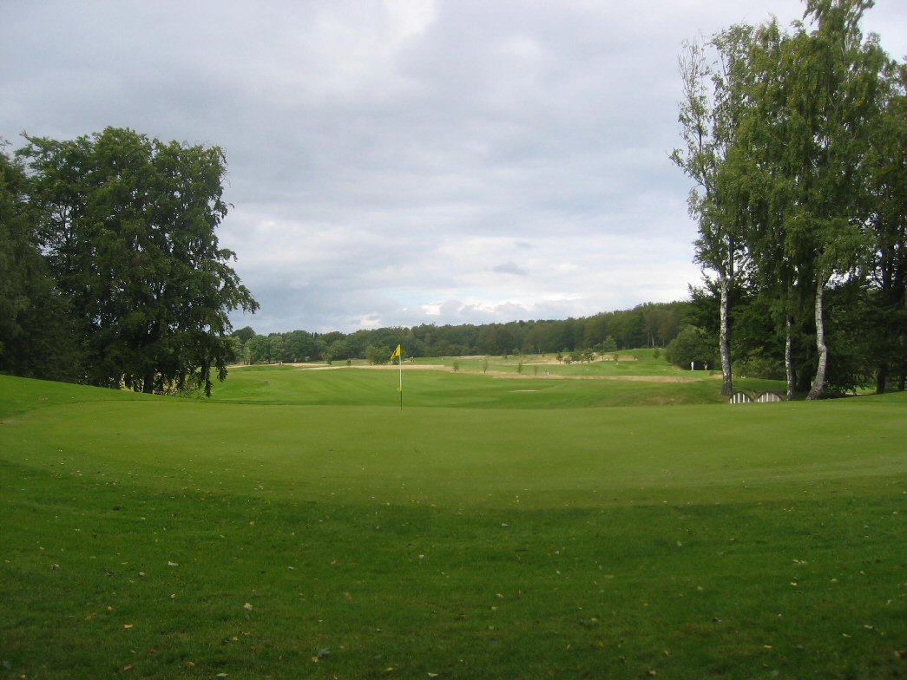

<div class="pages">
  <div data-page="hul12" class="page navbar-fixed toolbar-fixed" >
    <div class="navbar">
      <div class="navbar-inner">
        <div class="left">
          <a href="#" class="link back icon-only"><i class="icon icon-back"></i></a>
          <!-- <a href="#" class="back link icon-only"><i class="icon icon-back"></i></a> -->
        </div>
        <div class="center">Hul 12</div>
        <!-- <div class="right"></div> -->
        <div class="right">
        </div>
      </div>
    </div>
    <div class="page-content" style="padding-top:45px;">
       <div class="content-block">
          <center></center>
          <p>Nu starter hjemturen mod klubhuset og hvilken start. Et monster af et par 5 hul, som giver selv lav-handicapperen noget at tænke over.</p>
          <center></center>
          <p>Udslaget bør selvsagt være så langt som muligt, men to bunkere i venstre side, en strategisk placeret bunker i højre og en smal fairway er farerne der truer.</p>
          <p>Andetslaget bør ligeledes have en anseelig længde, for at give dig chancen for at komme på green i regulation. Placér din bold i venstre side af fairway for ikke at bringe den roughbeklædte, nedad-skrånende højreside i spil.</p>
          <p>100 meter fra green truer en stor fairwaybunker, fra hvilken et indspil til green virkelig er en udfordring. Indspillet til den meget store green vanskeliggøres af bækken og de store træer som omkranser hele green-området. Green skråner kraftigt fra bagkant til forkant og tager fint mod selv lange indspil.</p>
          <p>For lav-handicapperen er det muligt, men kun under gunstige vindforhold, at nå green i to slag. Du skal drive ca. 300 meter, hvilket vil give dig et indspil på ca. 210 meter i carry! Hvis du vælger at lægge op, skal du passe på fairway-bunkeren i venstre side. Glem ikke, at green ligger højere end fairway og at bolden skal lande på green, for at undgå bolden måske triller tilbage i bækken.</p>
          <p>Hulsponsor: <br />
          - LEDIGT -<br /><br />
          Bænksponsor:<br />
          - LEDIGT -
          </p>
        </div>
    </div>
    </div>
    </div>
  </div>
</div>
